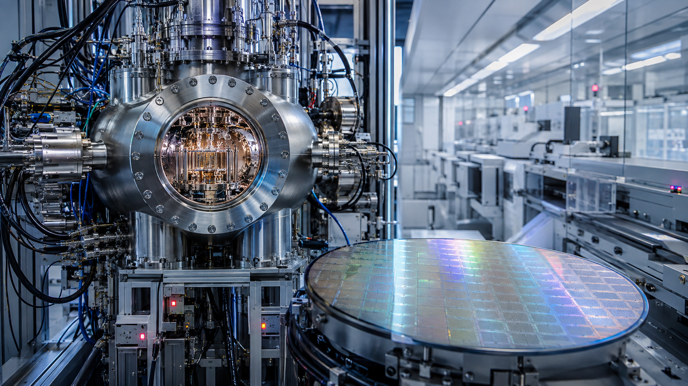
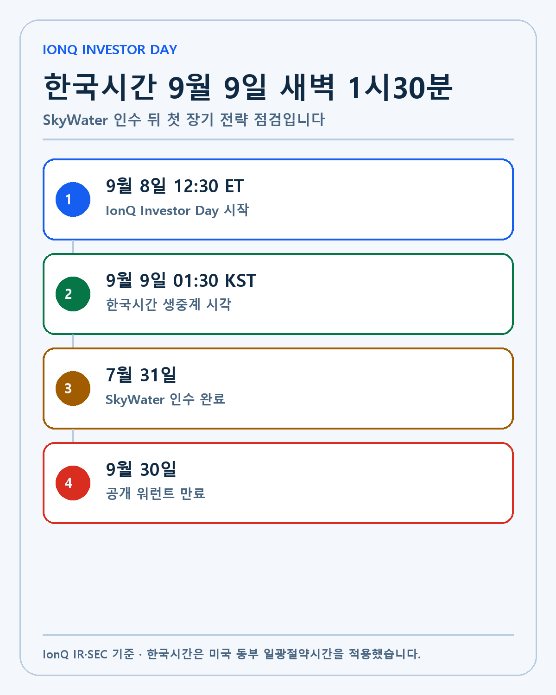
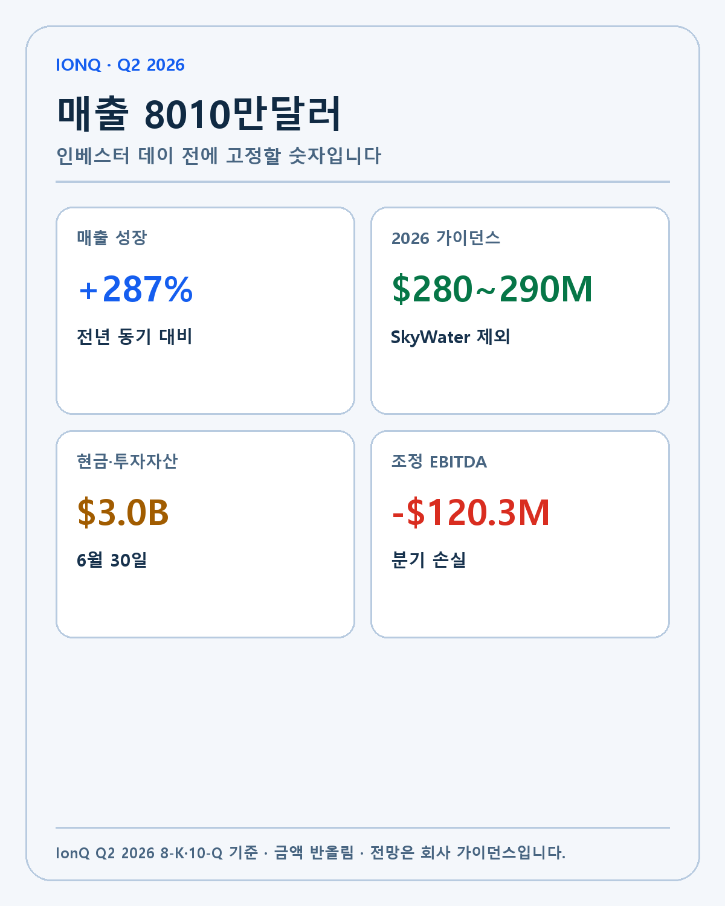
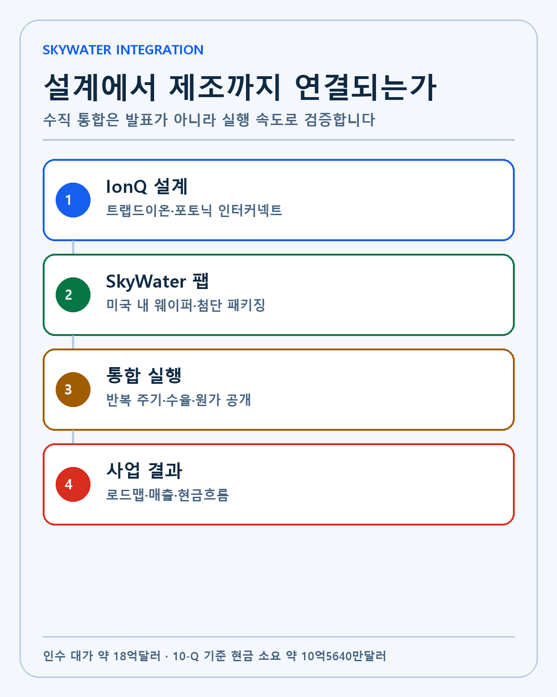
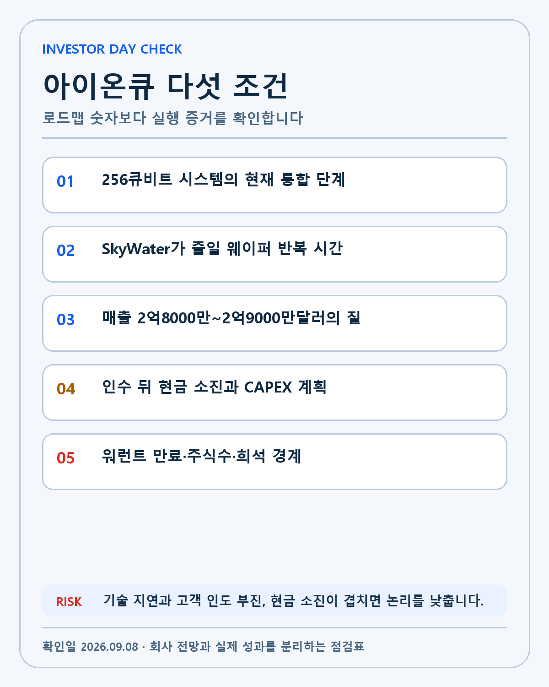

IONQ · DEEP RESEARCH
IonQ Investor Day 2026 프리뷰: SkyWater 수직 통합이 로드맵과 현금흐름을 바꾸는가
한국시간 9월 9일 새벽 1시30분 IonQ Investor Day를 Q2 매출, SkyWater 통합, 기술 로드맵, 현금 소진과 희석으로 검증합니다.
IonQ는 2026년 9월 8일 오후 12시30분 미국 동부시간에 Investor Day를 개최합니다. 한국시간은 9월 9일 오전 1시30분입니다. IonQ Investor Relations 행사 페이지에 일정과 웹캐스트가 공개돼 있습니다.
이번 행사의 핵심은 새로운 큐비트 숫자를 듣는 데 있지 않습니다. IonQ는 7월 31일 미국 기반 반도체 파운드리 SkyWater Technology 인수를 마쳤습니다. 양자컴퓨터 설계, 웨이퍼 제조, 첨단 패키징을 한 회사 안에 넣으면 개발 반복 시간을 줄일 수 있다는 것이 경영진의 설명입니다. 이 기대가 실제 수율, 시스템 통합, 고객 인도와 현금흐름으로 바뀌는지 검증해야 합니다.
IonQ는 2분기에 매출 8010만달러를 기록했고 2026년 매출 가이던스를 2억8000만~2억9000만달러로 올렸습니다. 동시에 조정 EBITDA 손실은 1억2030만달러였습니다. 6월 말 약 30억달러였던 현금·투자자산은 SkyWater 인수를 반영한 회사 추정으로 약 20억달러입니다. 기술 로드맵과 재무 체력을 같은 화면에서 봐야 하는 이유입니다.

다섯 줄 결론
첫째, Investor Day는 한국시간 9월 9일 오전 1시30분에 시작합니다. 둘째, Q2 매출 8010만달러와 287% 성장률은 실제 수치지만 2026년 매출 가이던스에는 SkyWater 기여가 포함되지 않았습니다. 셋째, SkyWater 인수의 총 고려 대가는 약 18억달러이고 인수 관련 현금 소요는 약 10억5640만달러였습니다. 넷째, 수직 통합의 효과는 웨이퍼 반복 시간·수율·패키징·고객 인도에서 검증해야 합니다. 다섯째, 9월 말 공개 워런트 만료와 인수 주식, 주식보상을 합쳐 주당가치를 봐야 합니다.
Investor Day는 경영진이 장기 목표를 제시하는 자리입니다. 장기 목표는 실적이 아닙니다. 발표 자료에서 회사 전망을 먼저 분리하고, 다음 분기의 SEC 공시에서 매출 구성과 현금 소진, 주식수를 다시 대조하겠습니다.
행사 일정과 한국시간
미국 동부는 9월에 EDT, UTC-4를 적용합니다. 한국 표준시는 UTC+9입니다. 시차는 13시간이고 9월 8일 오후 12시30분에 13시간을 더하면 9월 9일 오전 1시30분입니다.
| 일정 | 미국 동부시간 | 한국시간 | 투자자가 볼 자료 |
|---|---|---|---|
| IonQ Investor Day | 9월 8일 12:30 ET | 9월 9일 01:30 | 전략·로드맵·재무 목표 |
| 발표자료 공개 | 행사 전후 | 9월 9일 새벽 | 수치·가정·기준연도 |
| 공개 워런트 거래 종료 | 9월 29일 개장 전 | 9월 29일 밤 이전 | IONQ WS와 보통주 구분 |
| 공개 워런트 만료 | 9월 30일 | 10월 1일 전후 | 최종 행사·만료 수량 |

현재 확인된 것은 행사 날짜와 시작 시각입니다. 발표자 발언, 새 로드맵, 장기 매출 목표는 행사 전까지 UNKNOWN입니다. 커뮤니티가 예상하는 256큐비트 일정과 목표 주가를 회사의 확정 자료로 사용하지 않습니다.
Q2 매출 8010만달러의 구성
IonQ Q2 2026 결과와 SEC 8-K 첨부자료에 따르면 분기 매출은 8010만달러였습니다. 전년 동기 2069만4000달러보다 287% 늘었습니다. 회사는 이전 가이던스 중간값보다 20% 높은 매출이라고 설명했습니다.
Q2 Form 10-Q의 매출 분류를 보면 quantum hardware가 4646만7000달러, platform·consulting·support services가 3358만3000달러였습니다. 2분기 매출의 약 58%가 하드웨어, 약 42%가 플랫폼·서비스입니다.
| Q2 2026 기준선 | 수치 | 성격 |
|---|---|---|
| 총매출 | $80.1M | 실제 |
| 전년 대비 성장 | +287% | 실제 |
| Quantum hardware | $46.467M | 실제 |
| Platform·consulting·support | $33.583M | 실제 |
| FY2026 가이던스 | $280M~$290M | 회사 전망 |
| SkyWater 기여 | 가이던스 미포함 | 범위 경계 |

대형 양자 시스템의 인도 시점은 분기 매출을 크게 바꿀 수 있습니다. 매출이 늘었다는 사실만으로 반복성이 높아졌다고 볼 수 없습니다. 하드웨어 인도, 클라우드 사용량, 컨설팅과 지원 매출, 정부 계약을 나눠야 합니다.
Investor Day에서 통합 회사의 매출 목표가 제시되면 기존 IonQ 사업과 SkyWater의 매출을 분리하겠습니다. SkyWater를 합친 총매출이 커져도 IonQ 양자 플랫폼의 유기적 성장률과 마진이 자동으로 좋아지는 것은 아닙니다. 인수 효과와 본업 성장을 별도 열로 기록해야 합니다.
성장률 287%와 손실 1억2030만달러
IonQ의 Q2 조정 EBITDA 손실은 1억2030만달러였습니다. SkyWater와의 상업 관계 비용을 제외하면 회사가 제시한 조정 EBITDA 손실은 9560만달러였습니다. 같은 분기의 GAAP 순손실은 18억6770만달러로 컸지만 여기에는 워런트 부채 공정가치 변동 손실 15억7620만달러가 포함됐습니다.
GAAP 순손실과 현금 소진은 같은 값이 아닙니다. 주가 상승에 따른 워런트 부채의 회계상 평가손실은 현금 지출과 다를 수 있습니다. 그렇다고 영업 손실을 무시해도 된다는 뜻은 아닙니다. 조정 EBITDA와 영업현금흐름, 연구개발비, CAPEX를 함께 봐야 합니다.
성장 기업은 현재 이익보다 시장 선점과 기술 개발을 위해 현금을 쓸 수 있습니다. 투자 판단은 지출의 절대액보다 다음 단계가 얼마나 앞당겨지는지에 달려 있습니다. 같은 1억달러를 써도 시스템 인도와 고객 매출이 늘면 투자이고, 일정 지연과 재작업만 늘면 비용입니다.
현금 30억달러에서 20억달러로
6월 30일 현금·현금성자산·투자자산은 29억5930만달러였습니다. IonQ는 SkyWater 인수 뒤의 pro forma 현금·투자자산을 약 20억달러로 제시했습니다. 10-Q는 인수에 약 10억5640만달러의 현금이 필요했다고 설명합니다. 현금 대가 7억4130만달러와 약 3억1510만달러의 부채 상환·기타 거래비용을 합친 값입니다.
총 고려 대가 약 18억달러와 현금 소요 약 10억5640만달러를 혼동하면 안 됩니다. 거래에는 IonQ 주식도 포함됐습니다. SkyWater 주주는 종결 시점 주당 현금 15달러와 IonQ 보통주 0.4883주를 받았습니다.
약 20억달러의 pro forma 현금은 상당한 완충 장치입니다. 그러나 IonQ가 양자컴퓨팅, 네트워킹, 센싱, 보안, 우주 사업과 파운드리를 동시에 확장하면 현금 사용처가 많아집니다. Investor Day에서는 12개월 지출이 아니라 2028년 로드맵까지 필요한 누적 연구개발·설비투자를 확인해야 합니다.
현금 런웨이를 단순히 20억달러를 최근 분기 손실로 나눠 계산하지 않겠습니다. SkyWater의 매출과 비용, 운전자본, 통합 비용, CAPEX가 추가됩니다. 회사가 제시하는 장기 현금 목표에 사업별 가정이 붙는지 봐야 합니다.
SkyWater가 만드는 수직 통합 구조
IonQ의 SkyWater 인수 완료 발표는 양자 칩 설계, 미국 내 웨이퍼 제조, 첨단 패키징과 상용화를 한 조직 안에서 연결하는 전략을 설명합니다. SkyWater는 기존 파운드리 고객을 계속 지원하는 자회사로 운영됩니다.
IonQ의 트랩드이온 방식도 물리 하드웨어가 필요합니다. 이온을 가두는 칩과 제어장치, 레이저, 광학 인터커넥트, 패키징, 진공 시스템을 반복해서 개선해야 합니다. 외부 제조 일정이 길면 설계 변경과 다음 웨이퍼 사이의 대기 시간이 늘어납니다.
수직 통합이 작동하면 IonQ는 설계와 제조를 병렬화하고 정부·국방 고객에게 미국 내 신뢰 공급망을 제시할 수 있습니다. SkyWater는 IonQ 외 고객 매출을 유지하면서 양자 생태계의 제조 파트너 역할을 할 수 있습니다.
실행 위험도 분명합니다. 파운드리는 가동률, 수율, 장비투자와 고객 서비스가 필요한 별도 사업입니다. IonQ의 양자 로드맵을 우선하다 기존 고객의 납기와 수익성이 나빠지거나, 반대로 파운드리 운영 부담이 IonQ의 연구개발 속도를 낮출 수 있습니다. 시너지라는 말보다 웨이퍼 반복 시간, 수율과 매출총이익을 봐야 합니다.

로드맵 숫자를 읽는 법
IonQ는 SkyWater 인수 발표 당시 2028년에 20만 물리 큐비트 QPU와 8000 고충실도 논리 큐비트 기능 시험을 시작한다는 회사 목표를 제시했습니다. 200만 큐비트 칩 일정도 최대 1년 앞당길 수 있다고 설명했습니다. 모두 미래 전망입니다.
물리 큐비트 수와 논리 큐비트 수는 다릅니다. 오류보정을 적용해 안정적인 논리 연산을 만들려면 많은 물리 큐비트와 낮은 오류율, 제어·소프트웨어가 필요합니다. 큐비트 수가 많아도 충실도와 연결성, 가동률이 나쁘면 실제 문제 해결 능력이 따라오지 않습니다.
Investor Day에서 256큐비트 시스템의 현재 단계가 중요한 이유입니다. 개별 칩의 제작 완료, 시스템 통합, 제어 스택, 오류율, 고객 접근 가능 시점은 서로 다른 이정표입니다. 경영진이 단계를 구분하고 실제 측정치를 공개하는지 확인해야 합니다.
로드맵이 앞당겨졌다는 주장을 검증하려면 인수 전후 웨이퍼 반복 시간, 병렬 시제품 수, 수율과 패키징 처리 시간을 비교해야 합니다. 현재 공개 자료만으로 실제 단축 폭은 UNKNOWN입니다. 발표에서 기준선 없이 개선 퍼센트만 제시되면 추가 자료를 기다리겠습니다.
고객 인도와 RPO가 매출로 바뀌는가
IonQ는 Q2 발표에서 Remaining Performance Obligations가 전년보다 297% 늘었다고 밝혔습니다. RPO는 계약된 수행 의무의 남은 금액을 보여 주지만 당기 매출과 같지 않습니다. 계약 기간, 취소 조항, 고객 승인과 인도 일정에 따라 매출 인식 시점이 달라집니다.
양자컴퓨팅의 상업화는 대형 시스템 판매, 클라우드 사용, 연구 계약, 네트워킹·센싱 사업이 함께 움직입니다. 정부 계약은 기술 검증과 신뢰를 높일 수 있지만 조달 일정이 길고 특정 단계 승인에 따라 매출이 움직일 수 있습니다.
Investor Day에서 고객 이름보다 계약 유형과 인도 기준을 보겠습니다. 시스템을 설치했는지, 클라우드 사용량이 반복되는지, 기술 시연이 유료 계약으로 바뀌었는지, SkyWater의 기존 파운드리 매출이 어느 세그먼트로 보고되는지가 중요합니다.
공개 워런트 만료와 주당가치
IonQ의 8월 28일 SEC 8-K는 공개 워런트가 9월 30일 만료된다고 명시합니다. IONQ WS는 결제 시간을 확보하기 위해 9월 29일 개장 전에 거래가 중단됩니다. 보통주 IONQ는 계속 NYSE에서 거래됩니다.
워런트와 보통주를 구분해야 합니다. 워런트 보유자가 행사하면 회사에 현금이 들어오고 보통주 수가 늘 수 있습니다. 행사되지 않은 워런트는 만료됩니다. 최종 행사 수량, 현금 유입과 희석은 만료 뒤 공시에서 확인합니다.
SkyWater 인수에 지급한 IonQ 주식, 임직원 주식보상과 추가 자금조달 가능성도 주당가치에 영향을 줍니다. 매출 2배 성장과 기업가치 2배 상승은 같은 뜻이 아닙니다. 희석주식수가 늘면 한 주가 보유하는 사업 지분이 달라집니다.
Investor Day 확인표
- 256큐비트 시스템의 제작·통합·고객 접근 단계를 구분해 공개하는지 봅니다.
- SkyWater 인수 전후 웨이퍼 반복 시간, 수율, 패키징과 CAPEX 기준을 확인합니다.
- IonQ 유기적 매출과 SkyWater 매출, 하드웨어와 반복 서비스 매출을 나눕니다.
- 약 20억달러 pro forma 현금에서 연구개발·통합·설비투자에 필요한 누적 현금을 계산합니다.
- 워런트, 인수 주식, 주식보상을 포함한 희석주식수와 주당가치 목표를 봅니다.

행사 자료가 나오면 기존 목표와 새 목표를 같은 단위로 맞춰 비교하겠습니다. 물리 큐비트와 논리 큐비트, 시스템 수와 고객 접근 시간, 계약금액과 매출을 섞지 않습니다. 기준연도와 인수 포함 여부도 반드시 기록합니다.
강세·기준·약세 시나리오
강세 시나리오는 SkyWater가 웨이퍼 반복과 패키징 시간을 실제로 줄이고 256큐비트 시스템의 측정치와 고객 접근 일정이 구체적으로 제시되는 경우입니다. 기존 IonQ 매출 성장과 SkyWater 통합 목표를 분리하고도 현금 소진이 통제된다면 기술·제조·자본의 연결이 강해집니다.
기준 시나리오는 장기 로드맵이 유지되지만 새로운 수치가 제한적인 경우입니다. 목표 연도를 바꾸지 않았다는 사실보다 다음 분기의 시스템 인도, 플랫폼 사용, 조정 EBITDA와 현금흐름을 기다립니다.
약세 시나리오는 기술 일정 지연, 고객 인도 부진, 파운드리 CAPEX 증가가 동시에 나타나는 경우입니다. pro forma 현금이 예상보다 빨리 줄고 추가 주식 발행 가능성이 커지거나, SkyWater의 기존 고객 수익성이 약해지면 인수 논리를 낮춥니다.
투자 가설의 무효화 조건은 하루 주가 하락이 아닙니다. 트랩드이온·포토닉 기술 경쟁력이 약해지고 로드맵 중간 증거가 반복해서 밀리며, 고객 인도가 현금 매출로 전환되지 않고, 경영진이 희석과 현금 사용을 투명하게 설명하지 못할 때입니다.
내 포트폴리오에서 IonQ를 보는 방식
저는 기술, 해자, 창업자와 경영진, 성장률, 현금흐름 순서로 기업을 봅니다. IonQ의 기술과 미국 내 제조 통합은 미래에 필요한 양자컴퓨팅·네트워킹·센싱 기반을 만들 수 있습니다. 동시에 아직 큰 영업 손실과 기술 일정 위험을 가진 성장 기업입니다.
그래서 집중 투자가 곧 잘못이라고 보지 않지만 기대를 성과로 바꿔 적지도 않습니다. 기술 목표는 중간 측정치로, 계약은 인도와 매출로, 매출은 현금흐름으로 이어져야 합니다. SkyWater는 해자를 넓힐 수 있지만 운영 부담과 희석을 함께 가져왔습니다.
Investor Day를 본 뒤 바로 매수·매도 결론을 내리기보다 발표 자료를 기존 10-Q와 대조하겠습니다. 행사 다음 날에는 목표 숫자와 기준연도를 정리하고, D+7에는 주가 반응보다 회사가 추가 자료를 공개했는지 확인합니다. 다음 실적에서는 통합 회사의 세그먼트, 현금과 희석주식수를 다시 계산합니다.
통합 회사에서 새로 필요한 운영 KPI
인수 전 IonQ는 양자 하드웨어와 플랫폼·서비스 매출을 중심으로 볼 수 있었습니다. SkyWater가 들어오면 파운드리 가동률, 웨이퍼 매출, 매출총이익, 고객 집중과 CAPEX가 추가됩니다. 한 회사 안에 들어왔다는 이유로 모든 KPI를 양자컴퓨팅 성과로 합치면 사업의 질을 놓칩니다.
첫 번째 KPI는 웨이퍼 반복 시간입니다. 설계 변경부터 시제품 수령까지 걸리는 기간이 인수 전보다 짧아지는지 봅니다. 두 번째는 수율과 패키징 처리량입니다. 빠른 반복이 결함과 재작업을 늘리면 로드맵의 경제성이 나빠집니다.
세 번째는 기존 SkyWater 고객 유지율입니다. IonQ 내부 수요를 우선하면서 외부 고객을 잃으면 파운드리 매출과 가동률이 약해질 수 있습니다. 반대로 외부 고객 사업이 안정적이면 제조 학습과 현금흐름이 IonQ 로드맵을 뒷받침할 수 있습니다.
네 번째는 고객 인도입니다. 256큐비트 시스템이나 네트워킹·센싱 제품이 개발 단계에서 유료 납품으로 넘어가는지 확인합니다. 다섯 번째는 통합 비용과 CAPEX입니다. 매출 성장 뒤에 현금 소진이 얼마나 늘었는지, 회사가 제시한 시너지의 회수 기간이 있는지 봅니다.
| 통합 KPI | 확인 질문 | 실패 신호 |
|---|---|---|
| 웨이퍼 반복 시간 | 인수 전후 기간이 줄었는가 | 기준선 없이 개선 주장 |
| 수율·패키징 | 처리량과 품질이 함께 좋아졌는가 | 재작업·원가 증가 |
| 외부 고객 | 기존 파운드리 고객을 지키는가 | 고객 이탈·가동률 하락 |
| 양자 시스템 인도 | 기술 단계가 유료 납품으로 바뀌는가 | 일정 반복 연기 |
| 현금·CAPEX | 통합 투자가 계획 범위인가 | 현금 소진 가속 |
장기 목표에서 남아 있는 UNKNOWN
9월 8일 행사 전 기준으로 256큐비트 시스템의 정확한 통합 상태, SkyWater 인수 뒤 웨이퍼 반복 시간 감소 폭, 통합 회사의 장기 매출총이익과 CAPEX는 공개되지 않았습니다. 2028년 20만 물리 큐비트와 8000 논리 큐비트 목표를 달성하는 데 필요한 시스템 수, 오류보정 오버헤드와 누적 투자액도 UNKNOWN입니다.
SkyWater의 기존 고객 계약과 IonQ 내부 물량 배분, 기술 우선순위 사이의 충돌 가능성도 수치화할 수 없습니다. 경영진이 행사에서 설명하더라도 계약상 비공개 영역은 남을 수 있습니다. 공개되지 않은 부분을 가장 낙관적인 가정으로 채우지 않겠습니다.
워런트 만료 뒤 실제 행사 수량과 현금 유입, 최종 희석 효과도 9월 30일 이후 확인해야 합니다. 현재 공시는 만료일과 거래 중단 시점을 알려 주지만 결과를 알려 주지는 않습니다. 인수 주식과 주식보상까지 더한 다음 분기 희석주식수가 주당가치의 기준이 됩니다.
Investor Day가 이 UNKNOWN 일부를 줄이면 좋은 발표입니다. 수치가 늘어나는 것보다 불확실한 구간이 줄고 다음 확인 일정이 구체화되는지가 더 중요합니다. 확인할 수 없는 부분은 그대로 남기고 후속 8-K와 10-Q로 이동합니다.
이 글은 2026년 9월 8일 기준 IonQ IR과 SEC 자료로 작성한 개인 투자 연구입니다. 특정 종목의 매수·매도를 권유하지 않습니다. 회사의 장기 로드맵, 시너지와 재무 가이던스는 실제 성과와 다를 수 있으며 모든 투자 판단과 책임은 투자자 본인에게 있습니다.
작성 방법
2026년 9월 8일 기준 공식 자료와 공시를 우선하고 실제·회사 전망·시나리오·UNKNOWN을 분리했습니다.
개인 투자 기록이며 특정 종목의 매수·매도를 권유하지 않습니다.